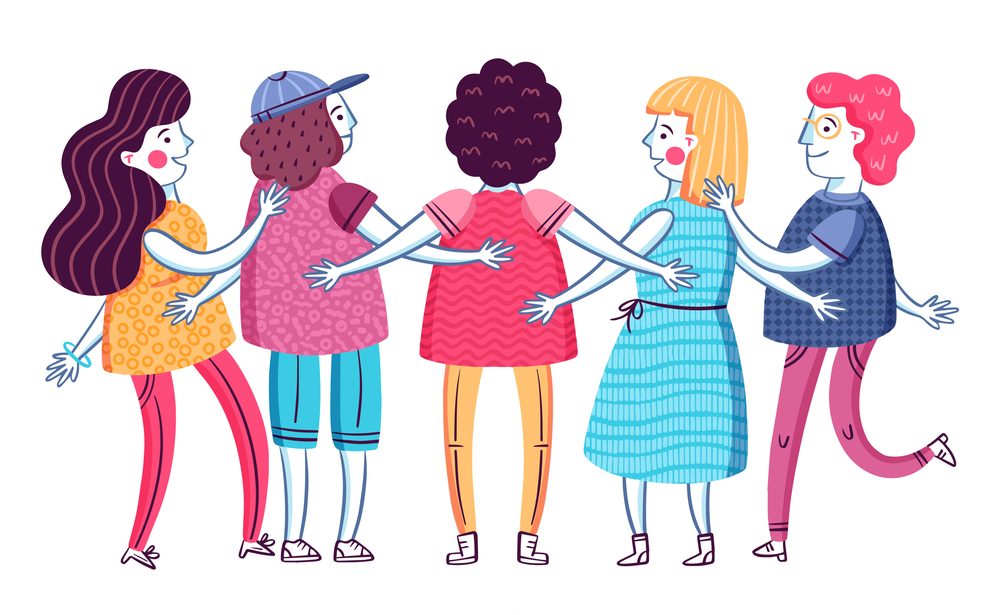

La inclusion <3
La inclusión es la actitud, tendencia o política de integrar a todas las personas en la sociedad, con el objetivo de que estas puedan participar y contribuir en ella y beneficiarse en este proceso.
La inclusion es un término el cual debemos tener kucho en cuenta y en nuestro vocabulario, ya que, nosotros podemos y debemos incluir a las personas a las actividades que hagamos sin algun tipo de problema, sin ninguna negacion a esta persona, por su cualquier condicion que ellos tengan.
Hay varios tipos de inclusion
Tipos de inclusion
- Inclusion Educativa
La inclusion educativa trata acerca de plantear que la escuela debe ser capaz incluir a todos los individuos en el proceso educativo, sin importar su condición, origen, raza, religion o genero.
Para la inclusion escolar, la diversidad es un valor positivo dentro de la escuela, debemos entender que todos somos diferentes y que, independientemente de nuestras características ya sean fisicas, psicologicas, sociales o culturales, tenemos el mismo derecho a recibir una educacion de calidad, sin ningun tipo de exclusion
El fin de la educación inclusiva es lograr el bienestar individual y social de todos
- Inclusion Social
Inclusion social significa oportunidades de trabajo, salud, viviendas dignas, educación, seguridad, entre otras cosas.Uno de los objetivos de la inclusión social, en este sentido, es mejorar las condiciones de vida de los individuos que forman parte de estos grupos, y ofrecerles las mismas oportunidades en los planos político, educativo, económico o financiero
- Inclusion y Exclusion
La exclusion es todo lo contrario a este, hablaremos de este termino porque esta relacionado a esto, la exclusion trata de marginar o segregar las condiciones o situaciones en las que se encuentren ciertas personas, existe la exclusion en el ambito educativo, social y laboral, subestiman las capacidades de ellos tan solo por su condición, pero debemos tener mucho en cuenta que todas las personas tenemos las mismas oportunidades que todos, sin importar que.
- ¿Por que es importante?
- Fomenta la tolerancia y reduce el acoso escolar
- Cultiva la empatia
- Ayuda a las personas a desarrolar una imagen positiva de si mismos
- Impulsa un cambio positivo en la mentalidad de las personas
- Now ayuda a conocer a las personas primero, antes de llegar a juzgarlas
- ¿Como podemos fomentar la inclusion?
- Utilizando terminos correctos
- Centrarse en las personas
- Aprender a aceptar nuestras diferencias
- Inclusion en los centros esucativos
La inclusion e n los centros educativos lo fomentan mediante el psicologos de cada institucion, mediante los proyectos que se dan por orden del distrito, haciendo que los estudiantes fomenten sus valores. Los profesores tambien tratan de que sus alumnos tengan muy en claro que a pesar de que somos diferentes en ciertos aspectos, debemos ser tratados de igual manera que los demas, ya que, nadie merece ser menos preciado por alguna condicion que tengan, todas las personas tienen los mismos derechos y obligaciones, nadie tiene por que ser tratado de diferente manera, tratado con desprecio.

Te proporcionaremos un video para que sepas mas acerca de este tema
La inclusion